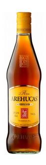

Arehucas Carta Oro
- Origen
- Gran Canaria
- Descripción
- De aroma ligero aunque bien definido, es un ron equilibrado, con presencia y el sabor preciso para dejar su sello en cualquier combinado.
- Formato de venta
- Botella de ron, 1L
- Precio
- 11,02€
Página principal